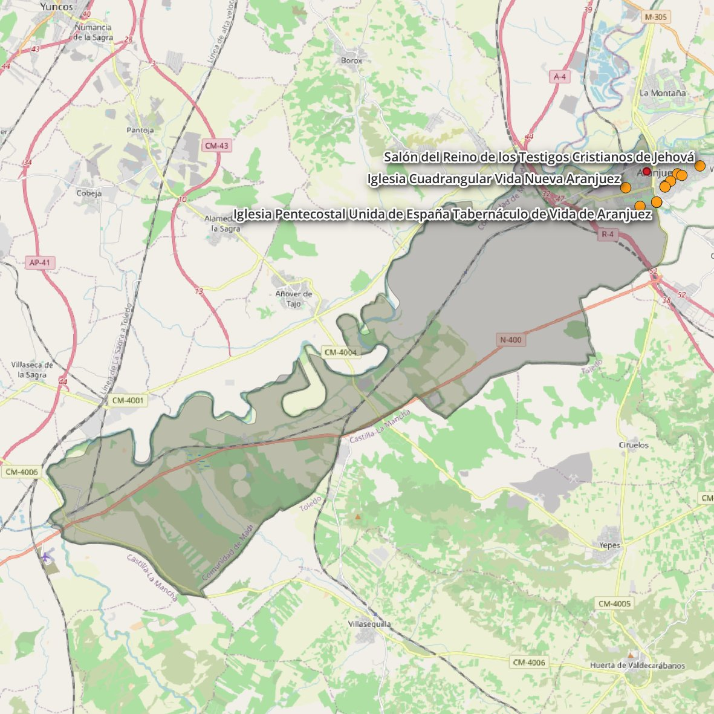
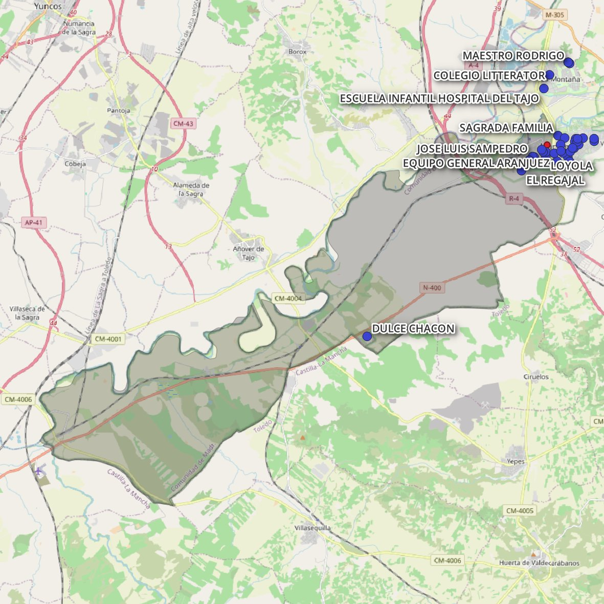

Puntos de interés en el territorio parroquial
Parroquia Espíritu Santo (Aranjuez) · Arciprestazgo de Aranjuez
Entidades religiosas no católicas

2 entidades religiosas no católicas en el territorio de la parroquia.
Evangélicos (2)
- Iglesia Cuadrangular Vida Nueva AranjuezGlorieta de Tamarindo 13, Aranjuez
- Nueva Vida AranjuezPoligono Industrial Gonzalo Chacón 6, Aranjuez
Fuente: Registro de Entidades Religiosas del Ministerio de la Presidencia, Justicia y Relaciones con las Cortes. Situación en el mapa: dirección geocodificada con CartoCiudad (IGN) o Nominatim (OpenStreetMap).
Centros educativos

9 centros educativos en el territorio de la parroquia (público: 7, privado concertado: 1, privado: 1).
| Centro | Tipo | Titularidad | Domicilio | Web |
|---|---|---|---|---|
| DOMENICO SCARLATTI | Instituto de educación secundaria | Público | Calle de Valeras, 22, 28300 Aranjuez | Página web |
| DULCE CHACON | Centro público de educación adultos establecimientos penitenciarios | Público | Carretera Nacional 400, k.28, 28300 Aranjuez | Página web |
| EL REGAJAL | Escuela infantil | Público | Calle La Imago, s/n, 28300 Aranjuez | Página web |
| JOSE LUIS SAMPEDRO | Centro público de educación de personas adultas | Público | Avenida de Loyola, 23, 28300 Aranjuez | Página web |
| LOYOLA | Centro privado de educación infantil, primaria y secundaria | Privado concertado | Calle de Valeras, 24, 28300 Aranjuez | Página web |
| MIS PRIMEROS PASOS | Escuela infantil privada | Privado | Calle Faisanes, c/v a c/Alejandro Sureda, 27, 27, 28300 Aranjuez | |
| PRINCIPE DE ASTURIAS | Colegio de educación especial | Público | Calle Zorzales, 11, 28300 Aranjuez | Página web |
| SAN FERNANDO | Colegio de educación infantil y primaria | Público | Calle de Santiago Rusiñol, 7, 28300 Aranjuez | Página web |
| SANTA TERESA DE JESUS | Colegio de educación infantil y primaria | Público | Plaza de la Paloma, 11, 28300 Aranjuez | Página web |
Fuente: registro de centros educativos de la Comunidad de Madrid. Solo se recogen los centros de alta.